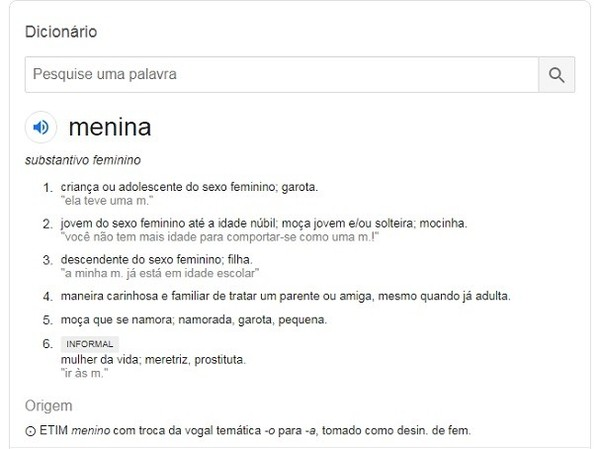

SENAI CTTI
Júlia Rocha, Rafael Lucas, Arthur Fissicaro, Luiz Fernando,
Forsetti Vilaça, Ítalo Willian
Leitura e Interpretação de Texto
Tipos de texto
RESUMO
Este trabalho visa trazer informações sobre leitura e interpretação de texto, com dicas para melhor entendimento das informações de qualquer tipo textual. Apresenta-se ainda os tipos de texto Jornalístico, Técnico e Informativo e suas características.
Leitura e interpretação de texto
O que é interpretação de texto? A interpretação de texto é a capacidade de uma pessoa compreender o que está escrito em uma mensagem textual, podendo pensar e refletir a partir daquilo que absorveu após a leitura. Quanto maior for a habilidade de alguém na interpretação de textos, mais facilidade essa pessoa terá em qualquer atividade da vida que tenha relação com leitura. De acordo com o site Gestão Educacional, a interpretação de texto é algo que começa a ser estudado ainda na infância e abrange justamente as situações cotidianas verbais e não-verbais. O simples fato de atravessar um semáforo quando o sinal está verde e parar diante do vermelho já é uma interpretação, porém não-verbal. Em contrapartida, quando estamos diante de uma placa de PARE, nos deparamos com interpretação de texto. Neste caso, desde crianças somos instruídos a pararmos quando estamos diante de uma sinalização dessas. Eis um bom exemplo de boa interpretação de texto, por mais que seja uma única palavra. De maneira mais ampla, interpretar é determinar com precisão o sentido de um texto, é descobrir o significado real de algo.


Dicas para interpretação de texto
1-Leia lentamente o texto todo. No primeiro contato com o texto, o mais importante é tentar compreender o sentido global do texto e identificar o seu objetivo;
2-Releia o texto quantas vezes forem necessárias. Assim, será mais fácil identificar as ideias principais de cada parágrafo e compreender o desenvolvimento do texto;
3-Sublinhe as ideias mais importantes. Sublinhar apenas quando você já tiver uma boa noção da ideia principal e das ideias secundárias do texto;
4-Separe fatos e opiniões. O candidato que pleiteia uma vaga num concurso público precisa saber separar o que é um fato verdadeiro, objetivo e comparável, do que é uma opinião pessoal, tendenciosa e mutável;
5-Retorne ao texto sempre que necessário. Além disso, é importante entender com cuidado e atenção os enunciados das questões;
6-Reescreva o conteúdo lido. Para uma melhor compreensão, podem ser feitos resumos, tópicos ou esquemas;
7-Procure grifar palavras novas, bem como o seu significado para aumentar o seu vocabulário;
8-Faça palavras-cruzadas, elas são uma distração, mas também um aprendizado.
Texto jornalístico
Textos jornalísticos são aqueles que tem como objetivo informar sobre algo, um fato verídico. A composição de um texto jornalístico é dividida em:
Pauta: escolha do tema.
Apuração: recolha das informações, dados e verificação da veracidade dos fatos.
Redação: elaboração do texto.
Edição: correção e revisão dos textos.
A linguagem jornalística é em prosa e deve ser clara, simples, imparcial e objetiva.
O jornalista possui a função de “traduzir” e transmitir as informações para o público em geral, respondendo as seguintes questões:
“O quê?” (acontecimento);
“Quem?” (quem está envolvido);
“Quando?” (horário em que ocorreu o fato);
“Onde?” (local que aconteceu o fato);
“Como?” (modo que ocorreu o evento);
“Por quê?” (causa do fato).
No tocante à sua estrutura gramatical, normalmente o texto jornalístico apresenta frases curtas e ideias sucintas, as quais favorecem a objetividade do texto.
Texto informativo
O texto informativo é um texto em que o escritor expõe brevemente um tema, fato ou circunstância ao leitor. Trata-se de uma produção textual objetiva, normalmente em prosa, com linguagem clara e direta. Tem como objetivo principal transmitir informação sobre algo, estando isento de duplas interpretações.
Estrutura do texto informativo
Introdução (tese): momento de exposição das informações necessárias para informar o tema que será explorado pelo emissor (autor).
Desenvolvimento (antítese): parte fundamental que contém as informações completas sobre o tema, desde dados mais relevantes, ou melhor, todos os dados que se pode reunir para apresentação do tema.
Conclusão (nova tese): encerramento do texto com exposição da ideia central.
Exemplos de textos informativos
Veículos de informação tais como jornais, revistas e entrevistas são os exemplos mais notórios de textos informativos. Além deles, os livros didáticos, as enciclopédias e os verbetes de dicionários são outros exemplos. Os artigos científicos e técnicos também podem ser considerados textos informativos, embora esse gênero textual é mais identificado com os textos expositivos-argumentativos. Confira exemplos de textos informativos:
1. Notícia de Jornal
Combate à DengueA picada do mosquito Aedes Aegypti tem demonstrado grande preocupação. Isso porque o aumento de mortes no país por motivo de dengue tem crescido de forma considerável nos últimos meses. A melhor maneira de combater a doença é explorar a única arma: a prevenção. Projetos de conscientização alertam a população para os perigos da proliferação do mosquito.
2. Verbete de Dicionário
Texto técnico
Geralmente os textos técnicos tratam-se de documentos oficiais de correspondência que possuem uma finalidade, seja informar, solicitar ou registrar.
Em redações técnicas é utilizada a linguagem formal, objetiva, e segue as regras da norma culta padrão.
Algumas modalidades deste gênero que nos deparamos no dia-a-dia é, por exemplo, a ata de uma reunião, o currículo, ata, memorando, o relatório, o atestado, dentre outros.
As redações técnicas são muito utilizadas no meio acadêmico, profissional, comercial e empresarial.
Para criar uma redação é preciso de uma estrutura específica, porém algumas características são comuns a todos, a saber:
Timbre: as redações técnicas geralmente são produzidas em papel timbrado da instituição.
Destinatário: alguns textos técnicos exigem a indicação do receptor da mensagem.
Título: algumas delas usam título, enquanto outras preenchem um campo denominado de “assunto”.
Tema: é o assunto que será explorado no escopo do texto.
Corpo do texto: os textos das redações técnicas geralmente seguem a estrutura padrão de introdução, desenvolvimento e conclusão.
Saudações finais: alguns documentos admitem as saudações finais e sempre devem aparecer na linguagem formal.
Assinatura: ao final do documento, muitas redações técnicas apresentam a assinatura do emissor, bem como o cargo que ocupa.
Para o vocabulário técnico são utilizados termos científicos utilizados por um grupo sociocultural e profissional. Os textos informativos podem ser jornalísticos ou técnicos, sendo que os textos informativos técnicos são manuais de instrução ou bulas de remédios, por exemplo. Quando um corpus de determinada área é analisado numa lista de frequência, à parte das que não pertencem ao sistema fechado da língua, as palavras que se sobressaem são as que pertencem ao vocabulário técnico.